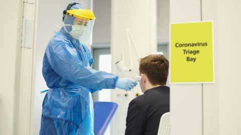

PM defends virus variant border measures
It comes as the search continues for a person in England infected with the Brazilian variant.

 Sign in
Sign in
It comes as the search continues for a person in England infected with the Brazilian variant.